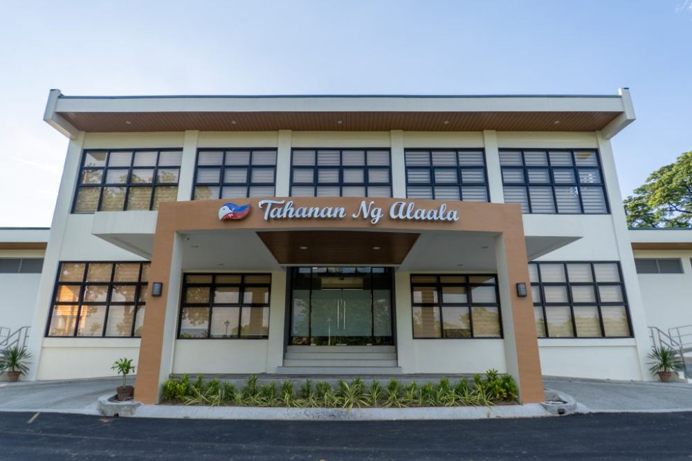
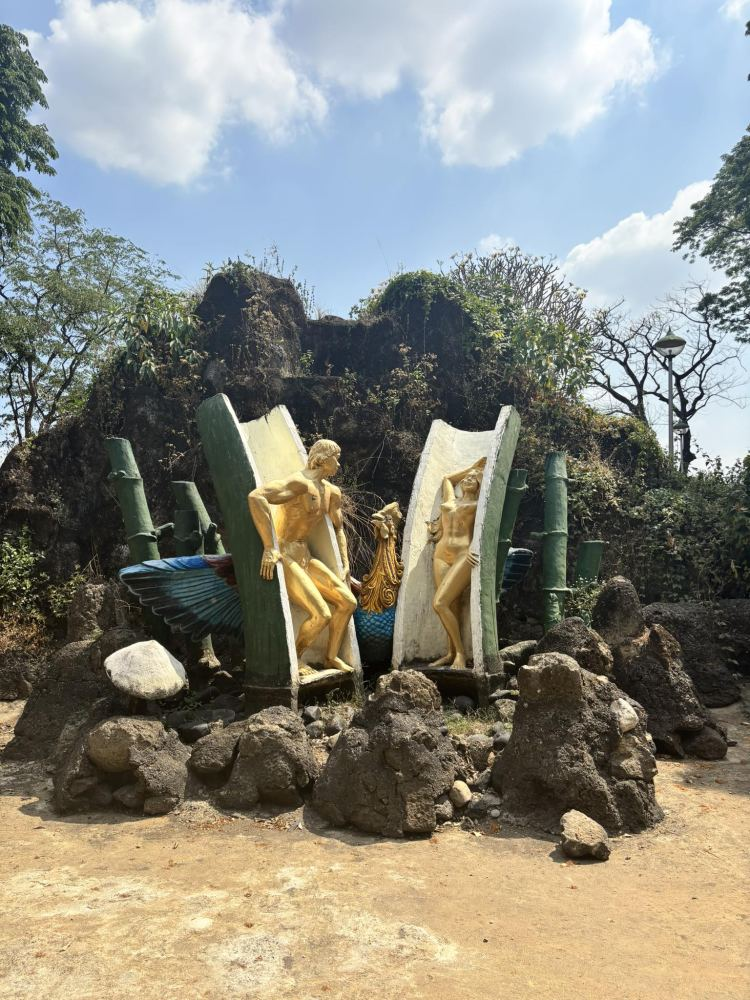
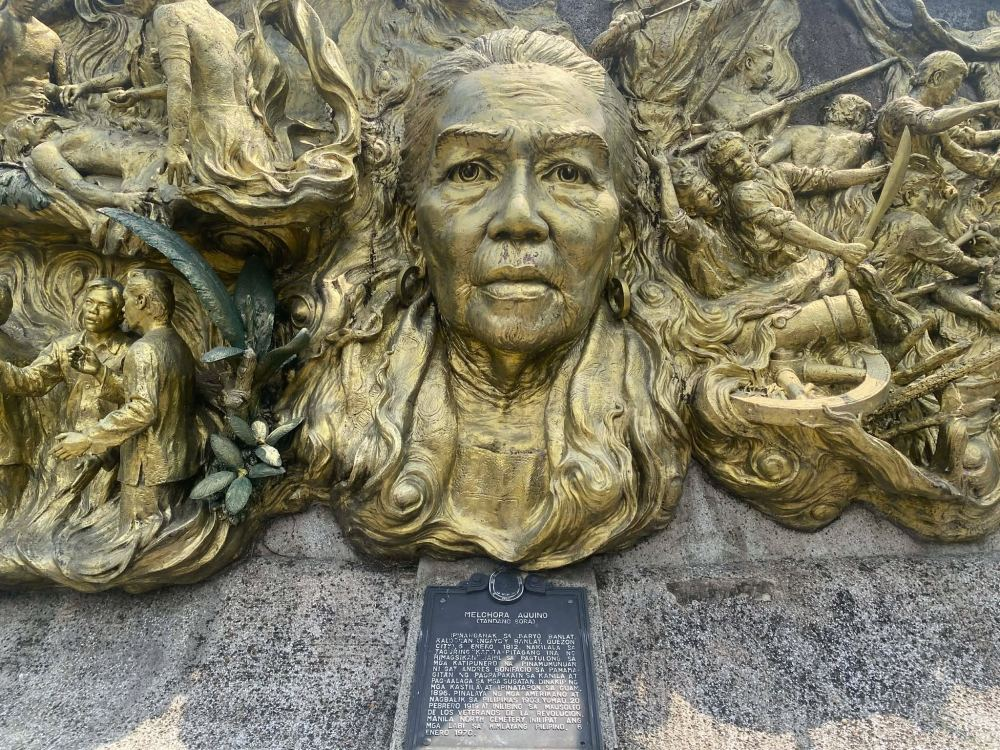
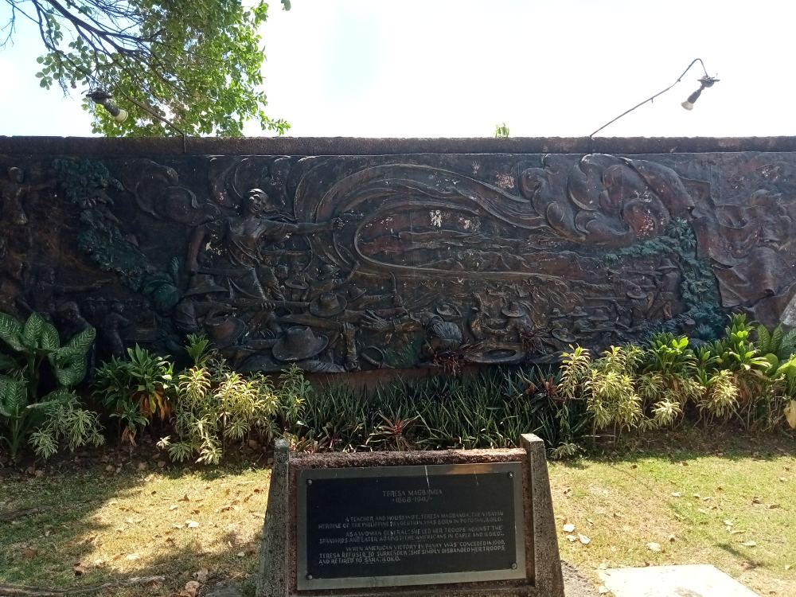
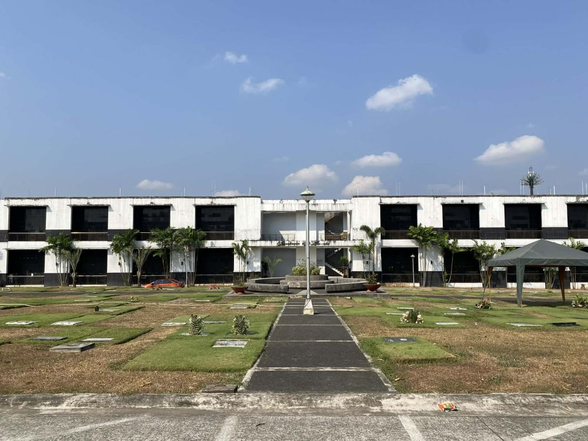
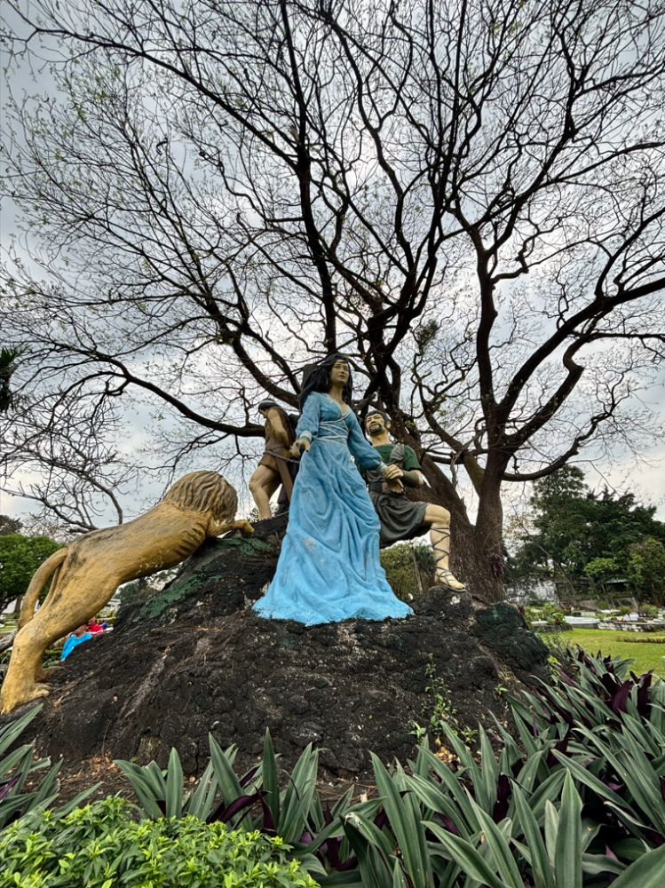

Guest
No account needed
- Browse the park's roads and paths
- Search streets on the map
- See what an account unlocks
Himlayang Pilipino Memorial Park · Quezon City
RestingPoint draws the shortest walking route to the plot, street by street, from wherever you are in the park.
ScrollFrom the Chapel Rotunda to the lagoon and the shrines, every landmark is on the map, so you always know where you are.






No account needed
Free account, email-verified
Authorized personnel